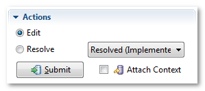
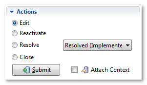
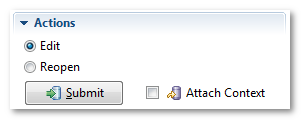

Case Editor: Actions
This is another important section, and allows you to decide what to do with the case. In FogBugz, case is in one of three states: Active, Resolved or Closed.
Active cases
Active cases can be only edited or resolved:

Default action is Edit, which simply adds new comment to the case. If you have changed the person in the Assigned To: field, Edit action will also reassign case to the new person.
Resolve action resolves the case with selected resolution.
Resolved cases
List of possible actions is slightly different for resolved case:

Reactivate action changes status of the case back to Active.
Close action closes the case. This is final state of all cases in FogBugz.
Closed cases
Closed case can be edited or reopened:

Reopen action is similar to reactivate, and changes the case to be active again.